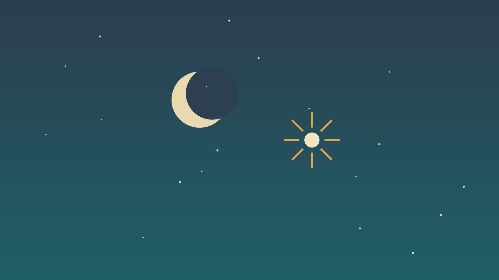

건강 칼럼 · 인천 야경증 한의원
자다가 갑자기 비명을 지르며 깨는 아이, 야경증 한방 관리

우리 아이 밤 모습, 이런가요?
- 잠든 지 1~3시간 뒤 갑자기 소리를 지르거나 울며 일어난다
- 눈은 뜨고 있지만 부모를 알아보지 못하고 달랠수록 더 몸부림친다
- 심장이 빨리 뛰고 땀을 흘리며 숨이 가쁘다
- 몇 분 지나면 다시 스르르 잠들고 아침엔 아무것도 기억하지 못한다
- 자다가 일어나 집 안을 돌아다닌 적이 있다
- 피곤한 날, 열이 난 날, 여행 간 날 더 자주 생긴다
이 체크리스트는 진단 도구가 아니라 상담이 필요한지 가늠해 보는 참고용입니다.
야경증은 왜 생기고 악몽과는 무엇이 다른가요?
잠은 꿈을 거의 꾸지 않는 비렘수면과 꿈을 꾸는 렘수면이 번갈아 나타나며, 가장 깊은 비렘수면은 밤 초반에 몰려 있습니다. 미국수면학회의 국제수면장애분류(ICSD-3)는 야경증과 몽유병을 이 깊은 잠에서 불완전하게 깨어나는 비렘수면 각성장애로 묶어 설명합니다. 아이의 뇌는 깊은 잠의 비율이 높고 잠과 깸을 오가는 조절이 아직 미숙해 이런 현상이 잘 생기며, 가족 중에 비슷한 경험이 있는 경우가 많습니다.
악몽은 주로 새벽 렘수면에서 생겨, 아이가 무서운 꿈을 꾸고 깨어 부모를 알아보고 안기며 꿈 내용을 이야기할 수 있습니다. 야경증은 밤 초반에, 깨어 있는 듯 보이지만 의식이 닿지 않고, 기억도 남지 않는다는 점이 다릅니다. 수면이 부족하거나 잠드는 시각이 들쭉날쭉할 때, 열이 날 때, 방광이 가득 찼을 때, 코골이로 잠이 자주 끊길 때 더 잘 일어납니다.
다른 진료를 먼저 받아야 하는 신호
- 밤에 여러 번, 매번 똑같은 동작이나 자세로 짧게 반복된다 (수면 중 발작 확인)
- 낮에도 멍하게 반응이 끊기거나 몸이 굳는 일이 있다
- 코를 심하게 골고 자다가 숨을 멈추거나 헐떡인다 (수면무호흡 확인)
- 밖으로 나가려 하거나 다칠 뻔한 일이 생겼다
- 만 7세 이후 새로 시작했거나 일주일에 여러 번 생긴다
- 낮 동안 심하게 졸리거나 행동·학습에 문제가 생겼다
이런 경우는 뇌전증 발작이나 폐쇄성 수면무호흡처럼 치료가 필요한 원인이 숨어 있을 수 있어, 소아신경과의 뇌파 검사나 이비인후과·수면클리닉의 수면다원검사로 먼저 확인합니다. 증상이 나타날 때 영상을 찍어 두면 진단에 도움이 됩니다.
한의학은 야경증을 어떻게 보나요?
한의학에서는 자다가 소스라치게 놀라 깨는 것을 야경(夜驚)이라 하여 아이의 마음과 잠을 맡은 심(心)과 담력과 결단을 맡은 담(膽)의 문제로 보았습니다. 아이는 정신을 붙잡아 두는 힘이 아직 약해, 낮 동안 받은 자극이나 몸 안의 열이 밤에 정신을 흔들면 잠이 깊이 머물지 못한다고 설명했습니다.
원인은 크게 세 갈래로 봅니다. 낮에 흥분과 긴장이 많아 간(肝)과 심의 열이 위로 오른 경우, 기름지고 단 음식으로 생긴 담열(痰熱)이 가슴을 답답하게 하는 경우, 겁이 많고 기운이 약해 심담(心膽)이 쉽게 흔들리는 경우입니다. 치료는 이 열을 가라앉히고 잠자리에 드는 마음을 차분하게 해, 깊은 잠에서 깨어나는 고비를 순하게 넘기도록 돕는 데 둡니다.
우리 아이는 어떤 유형일까?
야경증 자체는 대부분 성장 과정의 일부라, 한방 관리는 아이를 흔드는 몸과 생활의 조건을 덜어 주는 데 초점을 둡니다.
1. 간심화왕(肝心火旺) 낮의 흥분이 밤까지 가는 아이
- 이런 분에게 많아요
- 활동량이 많고 쉽게 흥분하는 아이
- 나타나는 모습
- 신나게 논 날이나 혼난 날 밤에 소리를 지르며 일어난다
- 함께 오는 몸의 신호
- 얼굴 붉음, 땀이 많음, 잠꼬대, 변비
- 진찰에서 보이는 모습
- 혀끝과 가장자리가 붉고 맥이 빠름
- 치료 방향
- 오른 열을 식히고 마음을 가라앉히는 방향 (억간산·사청환 계열)
- 오늘부터 해 볼 것
- 잠들기 2시간 전부터는 몸싸움 놀이와 경쟁 게임을 멈춰 주세요.
2. 담열내요(痰熱內擾) 가슴이 답답해 뒤척이는 아이
- 이런 분에게 많아요
- 단 간식과 야식을 즐기는 통통한 아이
- 나타나는 모습
- 잠들고 얼마 안 돼 뒤척이며 숨을 몰아쉬다 비명을 지른다
- 함께 오는 몸의 신호
- 입 냄새, 가래, 코골이, 배가 더부룩함
- 진찰에서 보이는 모습
- 혀에 누런 이끼가 끼고 맥이 매끄럽게 구름
- 치료 방향
- 끈적한 열을 삭이고 속을 편하게 하는 방향 (온담탕 계열)
- 오늘부터 해 볼 것
- 저녁 식사는 잠들기 3시간 전에 마치고 단 음료를 끊어 보세요.
3. 심담허겁(心膽虛怯) 겁이 많아 쉽게 놀라는 아이
- 이런 분에게 많아요
- 소심하고 낯선 환경을 힘들어하는 아이
- 나타나는 모습
- 이사, 입학, 동생 출생처럼 변화가 있을 때 자주 생긴다
- 함께 오는 몸의 신호
- 혼자 자기 싫어함, 작은 소리에 놀람, 식은땀
- 진찰에서 보이는 모습
- 얼굴빛이 옅고 맥이 가늘고 약함
- 치료 방향
- 기운을 북돋워 마음을 든든하게 하는 방향 (안신정지환·귀비탕 계열)
- 오늘부터 해 볼 것
- 잠자리 의식을 매일 같은 순서로 하고 은은한 수면등을 켜 두세요.
한의원에서는 어떻게 진찰하나요?
- 수면 기록: 2~3주 동안 잠든 시각, 증상 시각과 지속 시간, 그날 있었던 일을 적어 오세요.
- 영상 확인: 찍어 온 영상이 있다면 발작이나 다른 수면 질환과 구별하는 데 참고합니다.
- 코와 호흡: 코막힘, 편도 크기, 코골이와 숨 멈춤 여부를 확인합니다.
- 체질 진찰: 혀와 맥, 땀, 배의 상태, 평소 성격과 긴장도를 함께 살핍니다.
스티커침·한약 치료는 어떻게 하나요?
1. 침 치료
바늘을 찌르지 않는 소아 스티커침을 써서 아이가 진료를 무서운 경험으로 기억하지 않도록 합니다.
- 신문(神門): 손목 안쪽 가로 주름에서 새끼손가락 쪽 끝의 오목한 곳. 놀란 마음을 다독이는 자리입니다.
- 인당(印堂): 양 눈썹 사이 한가운데. 긴장을 누그러뜨리는 데 씁니다.
- 태충(太衝): 발등 위, 엄지와 둘째 발가락 사이를 발목 쪽으로 쓸어 올리다 멈추는 곳. 오른 열과 짜증을 내려 줍니다.
- 백회(百會): 정수리 한가운데. 머리를 맑게 하고 잠을 돕습니다.
2. 약침
야경증 아이에게 약침은 사용하지 않습니다.
3. 한약
수면 습관을 바로잡아도 야경증이 잦거나 아이가 낮에도 예민하고 쉽게 지친다면, 유형에 맞춘 탕약을 짧은 기간 씁니다. 쓴맛이 강하지 않은 약재로 짓고, 아이가 잘 넘기지 못하면 단것을 조금 섞어 주셔도 됩니다. 돌이 안 된 아기에게는 꿀을 피해 주세요. 수면이나 주의력 관련 약을 먹고 있다면 알려 주시면 확인해 처방합니다.
원장님이 네이버 블로그에 진료 이야기와 건강 정보를 꾸준히 올리고 있습니다. 더 많은 이야기는 블로그에서 확인해 보세요.
블로그 보기관리는 어떤 순서로 진행되나요?
- 첫 진료 발작이나 수면무호흡 가능성을 먼저 살피고 수면 기록 쓰는 법을 안내합니다.
- 1~2주 잠드는 시각을 앞당기고 낮잠과 저녁 일정을 조정하며, 필요하면 스티커침과 탕약을 더합니다.
- 3~6주 일주일에 몇 번, 몇 분 동안 나타났는지를 처음과 비교합니다.
- 마무리 횟수가 줄면 한약을 멈추고, 여행이나 시험처럼 잠이 흔들리는 시기에만 생활 관리를 다시 챙깁니다.
야경증은 아이가 자라면서 대부분 줄어드는 만큼, 한방 관리는 짧게 하고 수면 습관을 오래 이어 가는 것을 원칙으로 합니다.
증상이 나타났을 때와 평소의 관리
- 깨우지 않기: 흔들거나 큰 소리로 불러 깨우면 더 혼란스러워하고 오래갈 수 있습니다. 낮은 목소리로 짧게 말을 걸며 몇 분 곁을 지켜 주세요.
- 안전한 잠자리: 침대 주변의 모서리와 깨지는 물건을 치우고, 계단에는 안전문을, 창문과 현관에는 잠금장치를 둡니다. 2층 침대 위칸은 피합니다.
- 잠 늘리기: 평소보다 30분에서 1시간 일찍 재우면 횟수가 줄어드는 경우가 많습니다. 낮잠을 갑자기 끊은 시기라면 조용한 휴식 시간을 남겨 둡니다.
- 예정된 살짝 깨우기: 매일 비슷한 시각에 나타난다면 그 15~30분 전에 아이를 살짝 깨웠다 다시 재우는 방법을 시도해 볼 수 있습니다. 연구 규모는 작지만 부작용이 적은 방법입니다.
- 잠들기 전: 자기 전 소변을 보게 하고, 무서운 영상과 밝은 화면은 피합니다.
다른 진료가 함께 필요한 경우
- 코골이와 숨 멈춤이 있다면 이비인후과에서 편도·아데노이드를 확인하세요.
- 같은 동작이 밤에 여러 번 반복되면 소아신경과에서 뇌파 검사를 받으세요.
- 낮에도 불안이 크거나 큰 충격을 겪은 뒤 시작됐다면 소아청소년 정신건강 상담을 받으세요.
- 다리가 불편하다며 잠들기 힘들어한다면 철분 부족과 하지불안을 확인하세요.
자주 묻는 질문 Q&A
- Q1. 야경증이 오면 아이를 깨워야 하나요?
- 억지로 깨우지 않는 것이 좋습니다. 다치지 않게 지켜보면 대개 몇 분 안에 다시 잠듭니다.
- Q2. 아이가 왜 기억을 못 하나요?
- 깊은 잠에서 뇌의 일부만 깨어난 상태라 기억이 저장되지 않습니다.
- Q3. 정신적인 문제가 있는 건가요?
- 대부분은 뇌의 수면 조절이 아직 미숙해 생기는 것으로, 정서 문제와는 관련이 없는 경우가 많습니다.
- Q4. 몇 살쯤 없어지나요?
- 대부분 학령기를 지나며 줄어들고 청소년기에는 드물어집니다.
- Q5. 몽유병과 같은 건가요?
- 같은 깊은 잠에서 생기는 현상이라 한 아이에게 함께 나타나기도 합니다. 안전 관리가 특히 중요합니다.
- Q6. 스티커침은 자는 동안 붙여 두나요?
- 진료 때 붙여 드리고 안내한 시간 뒤 떼면 되며, 잠자리에서는 떼는 것이 좋습니다.
- Q7. 한약은 오래 먹어야 하나요?
- 보통 몇 주 짧게 쓰고, 좋아지면 수면 습관 관리로 이어 갑니다.
- Q8. 동생도 같은 방에서 자는데 괜찮을까요?
- 동생이 놀라 깰 수 있으니, 증상이 잦은 시기에는 잠자리를 조금 떨어뜨려 주세요.
문원열 대표원장한의사 · 365스마일한의원
인천 서구 가정동 한자리에서 10년 넘게 진료하며, 환자 한 분 한 분의 아픔을 깊이 들여다보고 근본적인 원인을 찾는 진료를 지향합니다.
진료 안내
- 진료시간
- 평일 09:00~20:00 (점심시간 13:00~14:00)
토·일·공휴일 09:00~15:00 - 주소
- 인천광역시 서구 가경주로 46, 2층 (가정동)
인천2호선 가정중앙시장역 인근
영상으로 길 안내 보기 → - 주차
- 한의원 건물 바로 앞 1층 도원주차장
- 예약
- 예약 바로가기 또는 전화 예약
진료시간은 사정에 따라 바뀔 수 있으니 방문 전 전화로 확인해 주세요.
함께 읽으면 좋은 칼럼
건강 칼럼 전체 보기 →


참고 자료
- American Academy of Sleep Medicine. International Classification of Sleep Disorders, 3rd edition (ICSD-3), 2014
- 질병관리청 국가건강정보포털 — 원문
※ 이 글은 일반적인 건강 정보이며, 개인의 상태에 따라 치료 방법과 결과는 다를 수 있습니다. 정확한 진단과 치료는 진료를 통해 결정됩니다. 침·약침 시술 후 드물게 멍, 통증 등이 생길 수 있습니다.